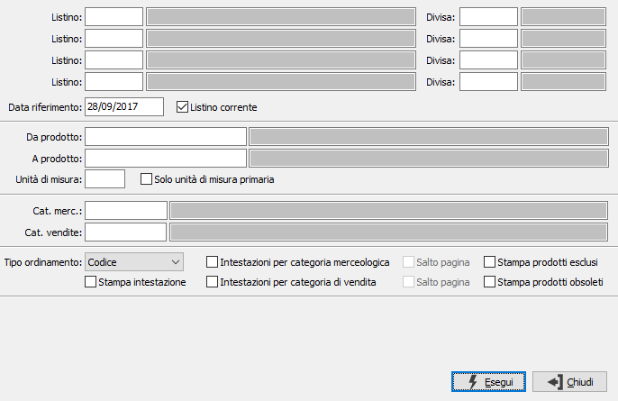

Stampa listino prodotti multipla
Il programma consente la stampa contemporanea dei prezzi relativi a più listini, sulla base dei parametri di selezione inseriti dall’utente.
E’ possibile effettuare la stampa non intestata oppure intestarla ad un cliente oppure ad un agente, è possibile effettuare raggruppamenti per categoria merceologica oppure per categoria di vendita, stampare il listino in più formati e con ordinamenti diversi.

LISTINO: indica il codice del listino per cui si vuole effettuare la stampa. L'inserimento del campo è obbligatorio. Sul campo sono attive le funzioni di ricerca (F9).
DIVISA: indica il codice della divisa per cui si vuole effettuare la stampa del listino richiesto. L'inserimento del campo è obbligatorio. Sul campo sono attive le funzioni di ricerca (F9).
Si possono specificare fino a quattro listini/divise da stampare insieme.
DATA RIFERIMENTO: definisce la data, tramite cui ricercare i prezzi nel listino. Saranno validi solo i prodotti le cui date di validità comprendono, come periodo, la data di riferimento.
LISTINO CORRENTE: indica di utilizzare il listino corrente, quello valido alla data di sistema (casella con segno di spunta).
DA PRODOTTO: eventuale codice dell'articolo, presente in anagrafica Prodotti, da cui si desidera iniziare la stampa. Confermando a vuoto, la stampa inizia con il primo prodotto valido. Sul campo sono attive le funzioni di ricerca (F9).
A PRODOTTO: eventuale codice dell'articolo, presente in anagrafica Prodotti, a cui si desidera terminare la stampa. Confermando a vuoto, la stampa termina con l’ultimo valido. Sul campo sono attive le funzioni di ricerca (F9).
UNITà di misura: codice relativo alla tabella unità di misura da utilizzare come filtro per la selezione dei prezzi del listino; questo parametro è alternativo a "Solo unità di misura primaria". Sul campo sono attive le funzioni di ricerca (F9).
Solo unità di misura primaria: se spuntato sarà applicato un filtro sulla selezione dei prodotti nel listino per includere solo i prodotti nella loro unità di misure primaria; questo parametro è alternativo a "Unità di misura".
CATEGORIA MERCEOLOGICA: eventuale codice della categoria merceologica, riferita ai prodotti, per cui effettuare la stampa. Sul campo sono attive le funzioni di ricerca (F9).
CATEGORIA DI VENDITA: eventuale codice della categoria di vendita, riferita ai prodotti, per cui effettuare la stampa. Sul campo sono attive le funzioni di ricerca (F9).
TIPO ORDINAMENTO: indica come deve essere ordinata la stampa: per codice o per descrizione prodotto.
STAMPA INTESTAZIONE: definisce se deve essere stampata l'eventuale intestazione del listino (casella con segno di spunta).
INTESTAZIONI PER CATEGORIA MERCEOLOGICA: definisce se deve essere effettuata la stampa dell'intestazione della categoria merceologica ogni volta che questa varia (casella con segno di spunta).
SALTO PAGINA: abilitata dalla spunta sulla casella precedente, effettua un salto pagina al cambio di categoria merceologica (casella con segno di spunta).
INTESTAZIONI PER CATEGORIA DI VENDITA: definisce se deve essere effettuata la stampa dell'intestazione della categoria di vendita ogni volta che questa varia (casella con segno di spunta).
SALTO PAGINA: abilitata dalla spunta sulla casella precedente, effettua un salto pagina al cambio di categoria di vendita (casella con segno di spunta).
STAMPA PRODOTTI ESCLUSI: consente di stampare anche i prodotti definiti come non stampabili sul listino (casella con segno di spunta).
STAMPA PRODOTTI OBSOLETI: consente di stampare anche i prodotti definiti come obsoleti (casella con segno di spunta).